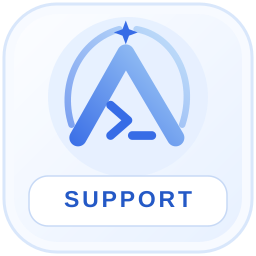

AxiomPilotCode / Помощь
Поддержка.
Вопросы по установке, работе CLI, аккаунту или синхронизации? Напишите нашему Telegram-боту — переход откроет Telegram в приложении или браузере.

AxiomPilotCode Support
@AxiomPilotCode_bot
Один канал для вопросов о работе AxiomPilotCode. Для обращения не требуется передавать пароль или токены аккаунта.
Написать в Telegram